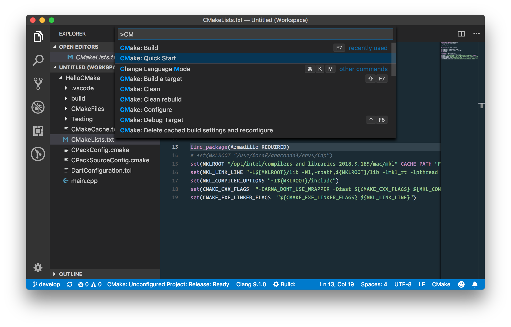

Compiling Tensorflow with Intel MKL support for Mac¶
The simplest and fastest way to get Intel MKL support in tensorflow is by using Intel Distribution for Python with the conda package manager.
By using the intelpython3_full (providing Python 3.6.3 at the moment), you get numpy and scipy MKL-accelerated libraries out of the box. Unfortunately, there is not an easy way to install Tensorflow compiled with MKL support on Mac OS X at this moment. We must compile the library from source to get MKL support.
Here are the steps I followed:
1. Get Intel Distribution for Python.
$ conda create -n idp intelpython3_full python=3
$ conda activate idp
$ conda env list
# conda environments:
#
base /usr/local/anaconda3
idp * /usr/local/anaconda3/envs/idpWe will need to know where to find MKL libraries to be able to compile tensorflow. For my particular case, I will need to use MKLROOT=/usr/local/anaconda3/envs/idp
2. Install tensorflow=1.9.0 from here
# TensorFlow CPU only
conda install -c aaronzs tensorflowThis is only done with the purpose of downloading tensorflow v1.9.0 dependencies. After we have compiled tensorflow with MKL support, we could uninstall this.
I did modify my conda channel configuration to prioritize intel channel. Here is my ~/.condarc:
channels:
- intel
- conda-forge
- defaults3. Clone Tensorflow repository. Choose v1.9.0 tag.
$ cd ~/gitRepos
$ git clone git@github.com:tensorflow/tensorflow.git
$ cd tensorflow
$ git fetch --all --tags
$ git checkout tags/v1.9.0 -b v1.9.0-local # Creates a local branch named v1.9.0-local based on tag v1.9.04. Configure your build to use local mkl installation (it is already downloaded with the Intel Distribution for Python). The following line works for bash and zsh.
yes "" | TF_NEED_MKL=1 TF_DOWNLOAD_MKL=0 MKL_INSTALL_PATH=/usr/local/anaconda3/envs/idp ./configureFor fish shell, you would need to use something like:
yes "" | env TF_NEED_MKL=1 TF_DOWNLOAD_MKL=0 MKL_INSTALL_PATH=/usr/local/anaconda3/envs/idp ./configure5. Build with the instructions set supported by my specific processor. To get this information, this can be useful (Mac OS X):
$ sysctl -a | grep machdep.cpu
...
machdep.cpu.features: FPU VME DE PSE TSC MSR PAE MCE CX8 APIC SEP MTRR PGE MCA CMOV PAT
PSE36 CLFSH DS ACPI MMX FXSR SSE SSE2 SS HTT TM PBE SSE3 PCLMULQDQ DTES64 MON DSCPL VMX
EST TM2 SSSE3 FMA CX16 TPR PDCM SSE4.1 SSE4.2 x2APIC MOVBE POPCNT AES PCID XSAVE OSXSAVE
SEGLIM64 TSCTMR AVX1.0 RDRAND F16C
machdep.cpu.leaf7_features: SMEP ERMS RDWRFSGS TSC_THREAD_OFFSET BMI1 AVX2 BMI2 INVPCID FPU_CSDS
machdep.cpu.extfeatures: SYSCALL XD 1GBPAGE EM64T LAHF LZCNT RDTSCP TSCI
...The build line provided here considers instructions set not supported by a Mac Book Pro with a 2.2 GHz Intel Core i7:
bazel build --config=mkl -c opt --copt=-mavx --copt=-mavx2 --copt=-mfma --copt=-mavx512f
--copt=-mavx512pf --copt=-mavx512cd --copt=-mavx512er --copt="-DEIGEN_USE_VML" //tensorflow/tools/pip_package:build_pip_packageNotice we would need support for various flavors of AVX-512 instruction set. See here for more information on these instruction sets.
So, for my supported instruction sets, I went with:
bazel build --config=mkl -c opt --copt=-mavx --copt=-mavx2 --copt=-mfma
--copt=-msse4.2 --copt="-DEIGEN_USE_VML"
//tensorflow/tools/pip_package:build_pip_packageI have no GPU, so I cannot compile tensorflow with GPU support.
6. Produce the optimized tensorflow python wheel in ~/tensorflow-v190
bazel-bin/tensorflow/tools/pip_package/build_pip_package ~/tensorflow-v1907. Review the dependencies required by tensorflow python wheel. We will use python's pkginfo for that:
$ conda install pkginfo
$ cd ~/tensorflow-v190
$ pkginfo -f 'requires_dist' tensorflow-1.9.0-cp36-cp36m-macosx_10_6_x86_64.whl
requires_dist: ['absl-py (>=0.1.6)', 'astor (>=0.6.0)', 'gast (>=0.2.0)',
'numpy (>=1.13.3)', 'six (>=1.10.0)', 'protobuf (>=3.4.0)', 'setuptools (<=39.1.0)',
'tensorboard (<1.10.0,>=1.9.0)', 'termcolor (>=1.1.0)',
'grpcio (>=1.8.6)', 'wheel (>=0.26)']I noticed that I needed to additionally install grpcio:
$ conda install grpcio8. Remove tensorflow from aaronzs' channel:
conda uninstall tensorflow9. Install compiled tensorflow wheel using pip, but without replacing intel's optimized libraries:
$ pip install --no-deps tensorflow-1.9.0-cp36-cp36m-macosx_10_6_x86_64.whlEnjoy!
Armadillo with Intel MKL Support (Linear Algebra)¶
Armadillo is a wonderful Linear Algebra C++ library "aiming towards a good balance between speed and ease of use". Syntax and functionality is "deliberately similar to Matlab". And you can take advantage of several high performance libraries, including Intel MKL.
I installed Armadillo in Mac with homebrew:
$ brew install armadilloI will be using Visual Studio Code and CMake to compile the following super simple C++ program (the emphasis here is on the build and linking with MKL).
#include <iostream>
//#define ARMA_DONT_USE_WRAPPER
#include <armadillo>
using namespace std;
using namespace arma;
int main(int, char**) {
mat A = randu<mat>(4,5);
mat B = randu<mat>(4,5);
cout << A * B.t() << endl;
}
I used the following extensions:
- CMake Tools
- CMake
- C/C++ by Microsoft.
From the command palette, using CMake: Quick Start:

Answer the quickstart questions, and the awesome vscode with the above extensions will create a skeleton project that will be easy to compile. I used a simple project named HelloCMake.
Now, we will need to modify CMakeLists.txt in order to provide the right compilation and linking flags:
cmake_minimum_required(VERSION 3.0.0)
project(HelloCMake VERSION 0.1.0)
include(CTest)
enable_testing()
add_executable(HelloCMake main.cpp)
set(CPACK_PROJECT_NAME ${PROJECT_NAME})
set(CPACK_PROJECT_VERSION ${PROJECT_VERSION})
include(CPack)
find_package(Armadillo REQUIRED)
# set(MKLROOT "/usr/local/anaconda3/envs/idp")
set(MKLROOT "/opt/intel/compilers_and_libraries_2018.3.185/mac/mkl" CACHE PATH "Folder contains Intel MKL libs")
set(MKL_LINK_LINE "-L${MKLROOT}/lib -Wl,-rpath,${MKLROOT}/lib -lmkl_rt -lpthread -lm -ldl -m64")
set(MKL_COMPILER_OPTIONS "-I${MKLROOT}/include")
set(CMAKE_CXX_FLAGS "-DARMA_DONT_USE_WRAPPER -Ofast ${CMAKE_CXX_FLAGS} ${MKL_COMPILER_OPTIONS}")
set(CMAKE_EXE_LINKER_FLAGS "${CMAKE_EXE_LINKER_FLAGS} ${MKL_LINK_LINE}")
I could find the right compilation and linking flags with help of the Intel Math Kernel Library Link Line Advisor.
In Mac OS X, it is also possible to use the Accelerate framework to get hardware accelerated BLAS and LAPACK, by using -framework Accelerate instead. See linking section in the Armadillo's FAQ page.